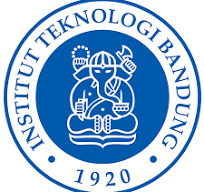

Universitas adalah perguruan tinggi yang menyelenggarakan pendidikan akademik dan vokasi dalam berbagai bidang ilmu, teknologi, dan seni. Universitas juga memberikan gelar akademis dan penelitian.
Kata universitas berasal dari bahasa Latin universitas magistrorum et scholarium, yang berarti "komunitas guru dan akademisi"
Universitas Indonesia (UI) adalah salah satu perguruan tinggi negeri tertua dan paling bergengsi di Indonesia. Didirikan sejak tahun 1849, UI telah menjadi pionir dalam inovasi dan pengabdian masyarakat, khususnya dalam mencetak lulusan yang berwawasan global.
Universitas Gadjah Mada adalah salah satu perguruan tinggi negeri tertua dan paling bergengsi di Indonesia. Didirikan setelah kemerdekaan, UGM berperan penting dalam pengembangan pendidikan tinggi nasional. Dengan beragam fakultas dan program studi, UGM menawarkan pilihan yang luas bagi calon mahasiswa. Kampus ini tidak hanya unggul dalam akademik, tetapi juga aktif dalam berbagai kegiatan kemahasiswaan dan penelitian. UGM telah melahirkan banyak alumni yang sukses di berbagai bidang, baik di dalam maupun luar negeri. Keunggulan akademik, sejarah panjang, dan reputasi yang baik menjadikan UGM sebagai salah satu tujuan utama bagi para calon mahasiswa di Indonesia.
Institut Teknologi Bandung (ITB) adalah salah satu perguruan tinggi negeri terkemuka di Indonesia, khususnya dalam bidang sains dan teknologi. Didirikan pada tahun 1959, ITB telah menjadi pusat inovasi dan pengembangan sumber daya manusia berkualitas tinggi.
Universitas Indonesia sebagai universitas tertua di Indonesia, memiliki reputasi yang kuat dalam berbagai bidang ilmu. UI menawarkan beragam program studi, memiliki fasilitas lengkap, dan komunitas akademik yang dinamis.
Universitas Gadjah Mada sebagai pionir pendidikan teknik di Indonesia, unggul dalam bidang sains dan teknologi. ITB memiliki fasilitas modern, program studi yang relevan dengan kebutuhan industri, dan reputasi internasional yang baik.
Institut Teknologi Bandung sebagai universitas umum tertua di Indonesia, memiliki sejarah panjang dan kontribusi besar dalam pengembangan pendidikan tinggi di Indonesia. UGM menawarkan berbagai program studi, memiliki lingkungan kampus yang kondusif, dan alumni yang tersebar di berbagai bidang.